|
| A B C D E F G H I J K L M N O P Q R S T U V W X Y Z |
(palaia, "ancient", graphe, "writing")
The art of deciphering ancient writing in manuscripts or diplomas. It is distinguished from epigraphy, which provides rules for reading carved inscriptions, and from diplomatics. which studies the intrinsic character of written documents, while palæography concerns itself only with written characters and the classification of documents by their external characters.
During the Renaissance period the reading of manuscripts, necessary to the printing of classic authors, became widespread, but it was only in the seventeenth century that scholars thought of reducing their observations to a system and formulating rules for the reading of manuscripts and diplomas. As early as 1681, in the first edition of his "De re diplomatica", Mabillon devoted a study (I, xi) to the various kinds of Latin writing, and gave specimens of these in the plates accompanying his book. It was on this model that Montfaucon, after having worked on the editions of the Greek Fathers, published his "Palæographia Græca" (Paris, 1708), simultaneously creating the word and the thing. From that time, thanks to the labours of Villoison, Natalis de Wailly, Léopold Delisle, and Henri Omont in France, of Thompson in England, of Gardthausen in Germany, palæography has become the basis of all study of historical, religious, or literary texts. There are as many branches of palæography as there are different kinds of writings, but the science of Oriental written characters is as yet hardly formed. In general students have had to be content with determining the place of each character in the succession of such characters. (See Ph. Berger, "Histoire de l'écriture dans l'antiquité", Paris, 1892.) In 1819, however, Kopp, in his "Palæographia Critica", laid the foundations for Oriental palæography, while devoting himself exclusively to Semitic languages. The province of palæology, therefore, more particularly consists of Greek and Latin characters, together with all those derived therefrom (Gothic alphabets, Slavic, etc.).
Covers two periods: A. Antiquity (till the fourth century after Christ); B. the Byzantine Period (from the fourth century to modern times).
This period is much better known today, owing to the numerous discoveries of papyri which have been made in Egypt (see MANUSCRIPTS). The differences between the various modes of writing are not so marked as in Latin documents. Besides, the material employed influenced the form of the letters: papyrus does not lend itself as well as parchment to rounded forms. The chief systems of characters used on papyrus are:
(1) The Capital, employed somewhat rarely, and chiefly known through inscriptions. On the papyri it is already mixed with uncial forms. One of the most ancient documents of this writing is the papyrus called the "Invocation of Artemis" (Library of Vienna, third century B.C.). The words are not separated from one another, and the uncial form of the lunar sigma 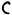 is found. The greater number of the other letters — A, E, P, II, etc. — have the same form as in the inscriptions.
(2) The Uncial — The term is borrowed by analogy, from Latin palæology. A passage from St. Jerome ("In Job", ed. D.Valarsii, ix, 100) proves that capital writing was formerly designated uncial. The term is now conventionally applied to rounded forms as distinguished from the square forms of the capital. It does not appear to have been definitively formed until the Hellenistic period, and then chiefly at Alexandria. The most characteristic uncial letters are:
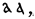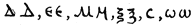
The first four of these letters have similar forms in the Latin alphabet. On the papyri thus composed (Papyrus of Chrysippus in the Louvre, end of third century B. C.; fragment of Euripides on parchment at Berlin, 100 B. C.; papyrus of the Constitution of Athens in British Museum, first century after Christ), the abbreviations are few, the words are not separated, and punctuation is rare. The accents and breathings perfected by the grammarians of Alexandria appear by degrees.
(3) The Cursive, directly derived from the capital, the forms of which it retained for a long time, The letters are joined by ligatures which allowed the writer to write flowingly without raising his calamus after each letter. This writing is chiefly used on administrative papyri for accounts, census, contracts, letters, reports, etc.; it is found, however, in copies of literary works and a part of the Constitution of Athens, cited above, is written in cursive writing. In this writing the alpha takes the minuscule form, the Beta retains its capital form or takes the simplified appearance of u; the H has the form of 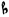; from the Roman period only dates, the prolongation of the first stroke of the 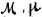. The majuscule cursive, which is that of the ancient papyri, is distinguished from the minuscule cursive, used on the papyri of the sixth and seventh centuries.
The history of Greek writing in the Middle Ages is more or less parallel with that of Latin. Until the ninth century uncials predominated. (Manuscripts in epigraphical capitals were not found in the East as in the West.) In the ninth century there arose in the Eastern, as in the Carlovingian, Empire a minuscule which became the customary script of manuscripts, but which always retained its traditional forms more faithfully than did the Latin character. The uncial is the chief script of parchment Manuscripts from the fourth to the ninth century. Dated Manuscripts written at this period are rare, and no more than its beginning and ending can be determined. According to the rules laid down by Montfaucon and Gardthausen, a manuscript is ancient in proportion as its characters resemble those of inscriptions. The most ancient Manuscripts have disconnected letters and abbreviations; they incline to rounded or almost square forms; the letters are nearly always of an equal height; the strokes are slightly marked; as a general thing, the simplest forms are the most ancient. The position of the initials is also an indication: not much larger than other letters on the papyri, they begin to spread over the margin in the fourth century, and soon acquire great importance; they are at first black, but are later embellished with colours. Such is the character of the ancient uncial, one of the most important specimens of which is furnished by the fourth-century "Codex Sinaiticus". The same is true of the "Dioscondes" of Vienna, written about A.D. 506, in which is found the abbreviation 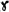 for ou.
The new uncial, on the other hand, appeared only at the end of the seventh and during the eighth century. To the square and round letters succeeded elongated characters terminating in a point; right angles were replaced by sharp corners; circles became pointed and tapering ovals. The origins of this style have been mistakenly sought in the ancient papyri (see Gardthausen, "Byz. Zeit.", XI, 112): examples of it may, indeed, be found in marginal glosses of the sixth- and seventh-century Syriac Manuscripts preserved in London, but this is all. The style appears fully formed chiefly in the Manuscripts of the ninth and tenth centuries. Through all these Manuscripts is traced the growing use of breathings and accents. Ligatures and abbreviations become more frequent. Beginning with the tenth century, dated uncial Manuscripts multiply. Script, hitherto sloping, becomes almost perpendicular. In Cod. Vat. 354 (dated 949) reappear the round, full forms, which increased in number in the eleventh and twelfth centuries. In the Evangelary of Harlei 5589 (dated 995) the B assumes the appearance of a Slavic letter 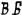, the and the are ornamented with little points, we meet with ligatures and abbreviations, 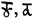 for tou and ta etc. Soon, especially in religious books, round letters returned to favour. There then arose a liturgical uncial with ornamented letters (eleventh and twelfth cent.). The papyri of the Byzantine period (sixth and seventh centuries) show the minuscule cursive, distinguished from the majuscule cursive by the greater ease with which the letters are joined by means of ligatures, and by more frequent abbreviations. This script, which is characteristic of papyri, is found only exceptionally in parchment Manuscripts: traces of it are found in the ninth-century Codex Bezæ in the possession of the University of Cambridge (see CODEX BEZÆ).
Minuscule character appears suddenly in Greek Manuscripts of the ninth century, at the very time when it was taking root in the West as a consequence of the Carlovingian reform. As in the West, it was destined to supplant all others. It has been thought, not without probability, that St. Theodore the Studite (759-826), who attached such importance to the copying of Manuscripts, was instrumental in this reform. The cursive minuscule may have furnished the elements for this character; it appears, however, chiefly as the continuation of the small uncial, which increases in refinement in the Manuscripts of the eighth century. Thence arose the idea of combining the advantages of the uncial with that of the cursive, and the new writing quickly spread through all the monastic studios of the Greek world. Definitively adopted for the copying of Manuscripts and engrossing of diplomas, it never underwent such radical changes as did the Carlovingian. Its development may, however, be divided into three stages:
(1) Ancient Minuscule (ninth to end of tenth century), connected with the cursive of the papyri, but with the letters more carefully separated, in spite of the ligatures.
(2) Middle Minuscule (from middle of tenth to end of eleventh century) shows a revival of the uncial and the cursive. The Manuscripts of this period evidence particular care; except for the ascenders, or uprights, which go beyond the line, the letters are of an almost equal height; the words are generally separated and the abbreviations, still limited, follow precise rules.
(3) The New Minuscule (twelfth century to modern times) acquires an increasingly obscure appearance because of the growth of abbreviations and ligatures. Besides, the employment of paper, which was partly substituted for parchment, contributed to make it assume a more cursive character. One of the most characteristic letters is the B, which is found under the cursive form 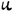 until the twelfth century and then resumes its normal shape.
The three alphabets (Gardthausen, op. cit. infra in bibliography, tables 5, 6, 9) are:
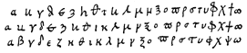
The first printers adopted this minuscule character for their type. Until the eighteenth century books printed in Greek retained a part of the ligatures and a large number of the abbreviations of the minuscule of the Manuscripts. It was also adopted by imperial or episcopal chanceries for copying diplomas.
In Greek handwriting two sorts of abbreviations are to be distinguished.
(1) Those of religious Manuscripts are the most ancient, being found in uncial Manuscripts and transmitted by tradition to the minuscule. The abbreviation is effected by the suppression of vowels and indicated by a bar, The nouns thus abbreviated were those having a religious character.
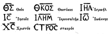
(2) In minuscule Manuscripts abbreviations are made by interrupting the word and cutting off the last letter with a transverse line. For the reader's assistance the scribe retained the characteristic consonance of the last syllable. These abbreviations, tables of which will be found in the works of Montfaucon and Gardthausen, are by far the most numerous and increase from the beginning of the thirteenth century. Examples --
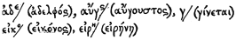
Abbreviations by superscribed letters are also found: --
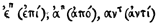
.Among the abbreviated endings may be cited: --
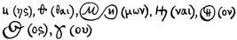
Some conventional signs (found tabulated in Gardthausen, op. cit., p. 259) are veritable hieroglyphics; they are used chiefly in astrological or chemical treatises. The moon is designated by a crescent, the sea by three undulating lines, etc. (see Wiedmann, "Byzantinische Zeitschrift", XIX, 144). Lastly, the Greeks, like the Latins, knew a tachygraphical character in which syllables were represented by signs. Several of these tachygraphical signs, indicating endings, parts of the verb "to be", etc., are transferred to the minuscule, and some recur in Latin handwriting.
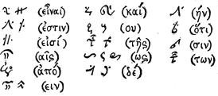
In Greek Manuscripts numerals are expressed by letters of the alphabet followed by an accent. Three archaic letters are made use of.
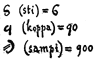
From 1000 the same letters are used with accents written beneath. Arabic numerals reached the Greeks through the West, and do not appear in Manuscripts before the fifteenth century. Dates, according to the era of the Creation of the World, are written in letters.
Owing to the unity of culture which prevailed throughout the territory subject to the Greek Church, there is no marked difference between the Manuscripts copied at Constantinople and those which originated in the provinces. Mgr Batiffol considers the minuscule in the Manuscripts of Southern Italy (Abbey of Rossano) as but slightly different from that of Constantinople; but his conclusions have been opposed by Gardthausen (Byzant. Zeit., XV, 236), who sees here simply the difference between the work of disciples and that of masters. The same scholar has studied, at Sinai, Greek Manuscripts copied in Armenia or Georgia in the thirteenth century, and has found their writing the same as that of Constantinople. In the West the national writings, as they are called, disappeared before the Carlovingian minuscule, and in the East the influence of the Greek Church was such as to prevent the formation of provincial handwriting. In the West, where the monks sometimes copied Greek Manuscripts and edited bilingual glosses (see Miller, "Glossaire Gréco-latinede Laon", notices and extracts from Manuscripts, 29, 2), the Greek writing is frequently awkward or irregular, but, far from seeking to modify its forms, the copyists sought, on the contrary, to scrupulously transcribe the characters which the Manuscripts copied by the Greeks offered as models.
It was quite otherwise with alphabets derived from the Greek and applied to foreign languages. Created under the influence of the Greek Church, but adapted to a vocabulary very different from the Greek, they became truly national writings. Such is the character adopted by the Copts, which resembles Greek writing, and is merely a transformation of the fourth-century uncial. It was also from the Greek uncial that Ulfilas, Bishop of the Goths, borrowed, in the fourth century, the characters of which he made use to translate the Bible into the Gothic language (Socrates, "Hist. Eccles", IV, xxxiii, 6), but he was also indebted to the Latin alphabet; moreover, traces are found in this ancient Gothic writing of the runes in use before that time. So, about 400, St. Mesrop, also desiring to translate the Bible, created the national alphabet of the Armenians by a mixture of the Greek uncial and cursive. The Georgian character, a still nearer neighbour to the Greek, has the same origin. Finally, the missionaries sent by the Greek Church among the Slavic people, especially Sts. Cyril and Methodius, created the Slavonic alphabet, from which the writings of all the Slavonic peoples are derived. This was about 855. The Glagolitic alphabet (glagol, "word"), which Slavic legend attributes to the invention of St. Jerome, is probably due to some disciple of St. Cyril, who composed it with the aid of Slavic runes and the Cyrillic alphabet (Leger's hypothesis — "Cyrille et Méthode", Paris, 1868), unless it is simply an adapted Greek minuscule (Gardthausen, "Palæog.", 109). The most ancient Manuscript in Cyrillic characters is the Gospel of Ostromir, dated 1057, but there was discovered at Prespa (Bulgaria), in 1888, an inscription in this writing in the name of the Tsar Samuel, dated 993 (Bulletin of the Russian Archæological Institute of Constantinople, III, 1899).
The Latin alphabet is derived, according to the most widely accepted opinion, from the Greek alphabets of Southern Italy. Its letters are composed of the following elements, the nomenclature of which it is important to know:
Thus B is formed of an ascender and a double paunch, H is formed of two ascenders and a cross, etc.
The history of Latin writing and its derivatives is divided into five periods:
A. Antiquity;
B. Barbarian Period;
C. Carlovingian Reform;
D. Gothic Period;
E. Sixteenth-Century Reform and Modern Writing.
On two occasions there has been a systematic reform in Latin writing intended to restore it to its primitive purity: under Charlemagne, and in the sixteenth century.
In the most ancient Manuscripts (fourth and fifth centuries) there are four kinds of writing.
(1) The Capital is composed of large and regular letters written between two parallel lines, beyond which they seldom extended. It seems to have been the oldest in use among the Romans, who made use of it almost exclusively for inscriptions. The epigraphical, or elegant, capital, similar to the ordinary majuscule of our printed books, was used in Manuscripts, but there exist only rare specimens of it. Such is the Virgil of the Vatican (Lat. 3256), which may be attributed to the beginning of the fourth century; other Manuscripts of Virgil of the same period are in the Vatican (Lat. 3255) and at St. Gall. The only difficulty in reading these Manuscripts lies in the fact that the words are not separated. The letters differ but little from those of our printed books. The A ordinarily appears under one of two forms: and . The character V designates both U and V; in the same manner I is used for both I and J. This beautiful writing seems to have been reserved for Manuscripts de luxe and for the most revered works, such as Virgil or the Bible. The rustic capital, much used from the end of antiquity, is less graceful; its characters are more slender and less regular; their extremities are no longer flattened by the small graceful bar which adorns the epigraphical capital. Such is the writing of the Prudentius of Paris (Bib. Nat., Lat. 8084), in which is found the signature of the consul Mavortius (527). All these Manuscripts lack punctuation, and in those where it occurs it was added later.
(2) The Uncial is a transformed capital writing in which the ascenders are curved and the angles rounded. At first this expression, derived from the Latin uncia, "one-twelfth", was applied to the capital writing itself. Examples occur in the Latin inscriptions of Africa, but it is above all the writing used in Manuscripts. The letters most modified are: A, D, E, G, H, M, Q, T, V, which became respectively:
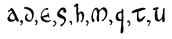
An example of a Manuscript in uncials is furnished in the collection of Acts of the Council of Aquileia (381) transcribed shortly after this date (Paris, Bib. Nat., Lat. 8907); others are the Livy of the Bibliothèque Nationale (Lat. 5720) and several Manuscripts of the sixth and seventh centuries.
(3) The Half-Uncial, a combination of uncial and minuscule letters. The letters E, V, H retain the uncial form; the D has sometimes the uncial form, sometimes the minuscule; the N is in capital. Characteristic letters are: 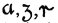 (respectively, a, g, r). The most ancient specimen is the Verona palimpsest, written in 486, containing the consular annals from 439 to 486.
(4) Minuscule (scriptura minuta) presents simplified forms similar to the modern characters of ordinary or italic print, within more restricted limits than the capital and the uncial. It was used from the imperial period for accounts, business letters, etc. The best known Manuscripts are not prior to the sixth century (Latin Manuscript 12097, Bib. Nat., Paris); the greater number date only from the seventh century. Even in the Roman period ligatures were numerous. The most characteristic forms are those of a, b, d, e, f, g, i, l, m, n, r, and s, respectively. 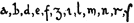
(5) The Cursive includes all rapidly traced writing. The size of the letters is smaller, their shape is simplified, and they are joined together. From this resulted occasional serious deformations of the alphabet. Before the sixth century it was a modification of the capital; from this time forth it borrowed its characters chiefly from the minuscule. The most ancient known specimens are the papyrus fragments of Herculaneum (W. Scott, "Fragmenta Herculanensia", Oxford, 1865), which date from A.D. 53 and A.D. 79; the wax tablets of the gold mines of Vorotspak (Transylvania), written between A.D. 131 and A.D. 167 (Corpus Inscript. Latinar., III, 2); the Egyptian papyri of the fourth century (Karabacek, "Mitteilungen aus der Sammlung der Papyrus Erzherzog Rainer", Vienna, 1886); the fragments of sixth-century imperial rescripts found in Egypt, which are distinguished by large irregular letters, joined, without any separation of words (Thompson, "Handbook of Palæog.", 211-13). This writing was much employed in legal documents down to the seventh century, and it is found in the papyrus charters of Ravenna (end of sixth century); on the other hand, it was but little used in the copying of Manuscripts, and serves only for glosses and marginal notes.
(6) The Tironian Notes. — The Romans were acquainted with a still more rapid system of writing, used to take down speeches or notes. These were the Tironian notes, the invention of which is attributed to Tullius Tiro, a freedman of Cicero (Suetonius, "De Viris illust. reliq.", 135), or to the poet Ennius. According to Plutarch (Cato Jun. 23) Cicero had formed tachygraphs for taking down his speeches. These notes were not arbitrary signs, like those of modern stenography, but mutilated letters reduced to a straight or curved line and linked together. Sometimes a single letter indicated a whole word (e.g., P for primus). The chanceries of the Middle Ages doubtless made much use of these notes.
There is no punctuation in the most ancient Manuscripts. But according to the Greek grammarians, whose doctrine is reproduced by Isidore of Seville, a single sign, the point, was employed: placed above, it indicated a long pause (disjunctio, or periodus, whence our word period); placed below, a short pause (subdistinctio, comma); in the middle, a pause of medium length (distinctio media, colon). In the greater number of Manuscripts the point above or periodus, and the point below, or comma, were used exclusively.
After the Germanic invasions there developed in Europe a series of writings called national, which were all derived from the Roman cursive, but assumed distinctive forms in the various countries. Such was, in France, the Merovingian minuscule, characterized by lack of proportion, irregularity, and the number of ligatures. The writing is upright, slightly inclined to the left, the Manuscripts are not ruled, and the lines sometimes encroach on one another. The phrases are separated by points and begin with a majuscule letter in capital or uncial; the abbreviations are few. According to the Corbie Manuscript of Gregory of Tours (Paris, Bib. Nat., Lat. 17665), the a has the form of a double c and is sometimes superscribed 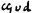 when it is joined to the following letter (apud); the e is surmounted by an appendix in the form of a crosier 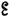; the e is often looped and resembles an 8: 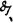, true, also, of the o: (toronicam), the l affects cursive forms, 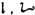; the r and s are distinguished with difficulty; and t is included in a great many ligatures which change its form; the i, without a dot, often goes above the line. The writings of royal diplomas, thirty-seven of which are preserved in the Bib. Nat., Paris, differs only from the minuscule of Manuscripts in that the higher and more slender characters are connected by tradition with the cursive of the imperial acts of the fifth century. The first line and the royal signature are in more elongated characters; at the beginning of the document is the chrismon, or monogram of Christ, formed of the Greek letters X and P interlaced, which replaces the invocation in use in the imperial diplomas. Tironian notes also accompany the signatures on twenty-seven diplomas; they represent the names of persons — referendaries or notaries — who assisted in the preparation and expediting of the document. The reading of these, undertaken by Jules Havet (died 1893) and completed by Jusselin (Biblioth. Ecole des Chartes, 1907, 482), has furnished valuable information on the organization of the royal chancery. Tironan notes are also employed for the correction of Manuscripts and for marginal notes.
Lombardic writing, which developed in Italy during this period, until the ninth century, bore a great resemblance to the Merovingian minuscule; it was also introduced into some Frankish monasteries in the eighth century. From the ninth century it assumed, in Southern Italy, a more original character and long survived the Carlovingian reform. In the twelfth century it reached its apogee in the scriptorium of Monte Cassino; it became regular, and was characterized by the thickness of the strokes which contrasted with the slender portions of the letters. In the twelfth century this writing acquired more and more angular shapes. It persisted in Southern Italy until the end of the thirteenth century. Its use in diplomas was abolished by Frederick II as early as 1231, Until the beginning of the twelfth century the pontifical chancery made use of a similar handwriting called littera beneventana, characterized by letters with long ascenders and by exceptional shapes — e.g., the a in the form of the Greek omega, the E and J with a loop like that of the O. The Visigothic handwriting (littera toletana, mozarabica) was employed in Spain from the eighth to the twelfth century. It combined with the Roman cursive some elements of the uncial and is generally illegible. According to Rodrigo of Toledo (De rebus Hispaniæ, VI, 29) a Council of Toledo in 1080 decreed — doubtless under the influence of the Cluniac monks — that it should be replaced by the French minuscule.
Irish writing (scriptura scottica), unlike the others, did not proceed from the Roman cursive. It is found under two forms:
(1) A half-uncial, somewhat large and regular, with rounded outlines (seventh-century Evangeliarium of Trinity College, Dublin, called the "Book of Kells"; Maesyck Evangeliarium, Belgium, eighth century). The words are separated, the ligatures numerous, the initials often encircled with red dots, and the abbreviations rather frequent. Some conventional signs also occur: 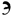 (ejus), (enim), 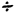 (est), 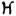 (autem). This writing was chiefly used for the transcription of liturgical books.
(2) A pointed minuscule, bearing no relation to the Roman cursive, and also derived from the half-uncial. This writing acquired still more angular forms in the eleventh century, and throughout the Middle Ages remained the national writing of Ireland. The Irish Manuscripts are remarkable for the fantastic and rich decoration of their initials (see ILLUMINATED MANUSCRIPTS).
The Anglo-Saxon writing is derived from both the Irish writing and the Roman script of the Manuscripts which the missionaries brought to the island. As in Ireland, it is sometimes round, broad, and squat (especially in the seventh and eighth centuries), sometimes angular, with long and pointed ascenders. The liturgical Manuscripts differ from those of Ireland in the frequent use of gold in the initials. The Evangeliary of Lindisfarne (Book of Durham), transcribed about 700 (London, Brit. Museum), is one of the most beautiful examples of round writing. Anglo-Saxon writing disappeared after the Norman Conquest, but the Carlovirigian minuscule which succeeded it was formed partly under the influence of the Irish and Anglo-Saxon monks who had been brought to the Continent.
The reform of writing undertaken in the monasteries on Charlemagne's initiative was inspired by the desire for correct and easily legible texts of the Sacred Books. Models were sought in the ancient Manuscripts, and Servatus Lupus, Abbot of Ferrières, persuaded Eginhard that the royal scribe Bertcaudus should take as a model the ancient capital ("Lettres", ed. Desdevises du Dezert, Paris, 1888, pp. 60, 61). The monastery of St. Martin of Tours, of which Alcuin was abbot (796-804), may be considered the chief centre of this reform and produced the most beautiful manuscripts of this period — e.g., the Evangeliary of Lothair, the Bible of Charles the Bald, the Sacramentary of Autun, the book of St. Martin of Quedlinburg. These Manuscripts served as models for the monastic scriptoria throughout the empire, and by degrees the Carlovingian writing conquered all the West. In these Manuscripts are found the various kinds of ancient writing: the epigraphic capital, the rustic capital, the uncial, the half-uncial, and the minuscule. With few exceptions, the capital was little used except for titles, initials, and copies of inscriptions. The Manuscripts of St. Martin of Tours show a partiality for a beautiful half-uncial, but the most important reform was the creation of the minuscule, which became, except for titles, initials, and the first lines of chapters, the writing used in the greater number of Manuscripts. This minuscule prevailed throughout Europe in the twelfth century, and in the sixteenth century, when another reform of writing was inaugurated, the Italian copyists and typographers again used it as a model. M. L. Delisle (Mém. Acad. des Inscript., XXXII) has shown that the half-uncial and the cursive uncial, employed in the sixth and seventh centuries for the annotation of Manuscripts, may be traced as elements in the Carlovingian minuscule. Among its chief characteristics are: A sometimes open , sometimes closed, and derived from the uncial 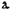; the ascenders of the b, d, l, and h broadened at the top  ; the g retains its semi-uncial form 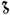; the i no longer goes above the line. The Manuscripts hence forth well ordered present a clear and pleasing appearance. The words are nearly always well separated from one another; ligatures are rare, but that of the & (for and) has been retained. Sentences begin with majuscules and are separated by points (weak punctuation) or semi-colons (strong punctuation). At first, abbreviations were few, but they increased in the tenth century. One of the most beautiful specimens of this minuscule is furnished by the Manuscript Lat. 1451, in Bib. Nat., Paris, transcribed in 796, and containing a collection of conciliar canons and a catalogue of the popes.
; the g retains its semi-uncial form 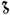; the i no longer goes above the line. The Manuscripts hence forth well ordered present a clear and pleasing appearance. The words are nearly always well separated from one another; ligatures are rare, but that of the & (for and) has been retained. Sentences begin with majuscules and are separated by points (weak punctuation) or semi-colons (strong punctuation). At first, abbreviations were few, but they increased in the tenth century. One of the most beautiful specimens of this minuscule is furnished by the Manuscript Lat. 1451, in Bib. Nat., Paris, transcribed in 796, and containing a collection of conciliar canons and a catalogue of the popes.
In documents of the imperial chancery, the reform of writing was at first less pronounced, and the scribes retained the elongated writing of the Merovingian period; it became, however, clearer, more regular, and less encumbered with ligatures, while care was taken in the separation of the words. In the time of Louis the Pious, on the other hand, the minuscule of Manuscripts Began to be seen in official documents, and soon it supplanted writing. At the same time it followed some ancient traditions: it is generally more ornamented than the writing of Manuscripts, the space between the lines is greater, the ascenders of the d, i, and l are usually lengthened, the first line of a diploma is always in slender and elongated characters.
Such is the system of writing which, thanks to its simplicity and clearness, spread'throughout the West, and everywhere, except in Ireland, took the place of the national writings of the barbarian period. In the tenth century it was, however, less regular, and it became more slender in the eleventh century. The Manuscripts and official documents are generally very carefully executed, the words are well separated, and abbreviations are not yet very numerous. Beginning with Clement IV (1046-48), the pontifical Chancery substitutes this writing for the littera beneventana; however, until Paschal II (1099-1118), the two systems were employed simultaneously. It was only in the latter pontificate period that the Carlovingian became the exclusive writing of the pontifical notaries, as it remained until the sixteenth century.
Gothic writing arose from the transformations of the Carlovingian minuscule, much as Gothic architecture is derived from Romanesque. The transition was at first imperceptible, and most of the Manuscripts of the first thirty years of the thirteenth century do not differ from those of the preceding epoch. It is only noticeable that the letters thicken and assume a more robust appearance, and that abbreviations are more frequent. Soon changes are introduced: the regularity is more pronounced, curves are replaced by angles, the lower extremities of certain strokes are provided with more or less fine lines in the shape of hooks, which turn up to the right to join the next stroke; the upper curves of the letters m and n are replaced by angles. Among the most ancient examples is a Manuscript copied at St. Martin of Tournai in 1105 (Paris. Bib. Nat., Lat. Nouv. 2195, reproduced in Prou, "Palæography", pl. VII, 1), and a charter of the Abbey of Anchin near Lille (between 1115-20; Flammermont, "Album paléog. du nord de la France", pl. IV). On the mortuary roll of Bl, Vitalis, Abbot of Savigny (died 1122), are found, among signatures collected in France and England, specimens of the new writing mingled with the Carlovingian minuscule. Diplomatic writing follows ancient tradition until the thirteenth century, and retains the elongated ascenders, which sometimes end in a more or less curled stroke. Nevertheless, as early as about 1130 the influence of Gothic writing was felt in the charters of the North, some of which are even written in the characters used in Manuscripts Among the most beautiful charters of this period may be mentioned those of the papal Chancery; in the twelfth century their writing had become simple, elegant, and clear.
At the end of the twelfth and during the thirteenth century the change in handwriting was more pronounced. Manuscripts and charters in the vulgar tongue are more and more numerous. Writing ceases to be a monastic art; it no longer possesses its former beautiful uniformity and takes an individual character from the scribe. Abbreviations multiply; side by side with the elegantly shaped Gothic minuscule appears in official documents (registers, minutes, etc.) a smaller, more cursive writing, pointed and ligatured. The tendency during this period is to diminish the size and to thicken the letters. In luxuriously executed liturgical books, however, large thick letters, termed "letters of form", are used. This sort of letters persisted until the sixteenth century and served as a model for the earliest type used in printing. Finally, the diplomatic writing used in charters disappears in the first part of the thirteenth century, but the writing of books takes on a cursive character. In the fourteenth century the writing of ordinary books becomes more and more slender, angular, and compressed. The "letter of form" is reserved for inscriptions, for copying the Bible and liturgical books. The same characters appear in official documents where cursive writing becomes more and more frequent, not only in minutes and registers, but even in certified copies (expéditions solennelles). It is evident that the scribes wrote more frequently and freed themselves from the ancient traditions. This transformation became still more pronounced in the fifteenth century, when Gothic writing took on a national character in the various countries of Europe. The writing of charters then became finer and more cursive, the letters are less carefully formed and all joined together. At last printing, which spread through the West about 1450, fixed the characters then in use. The majuscule letters, called capitals, used to begin sentences or proper names, are always borrowed from uncial or capital writing. Cursive writing was much employed, even for the copying of books. Moreover, according to the temperament of individual scribes, gradual transitions occur between the "letter of form" and the cursive. Such, e.g., is Manuscript 9242 of the Library of Brussels (Chronicle of Jacques de Guise), dated 1446.
One of the chief difficulties in reading documents of the twelfth to the sixteenth century is the frequency of abbreviations. This was carried to such an excess in official documents that some princes — e.g., Philip the Fair, by his ordinance of July, 1304 (Ordonnances des Roys de France, I, 417) — vainly endeavoured to restrain their use. Abbreviations continued to multiply until the fifteenth century and they are found not only in manuscripts but also in the greater number of printed books previous to 1520. Happily, these abbreviations were not arbitrarily conceived: their use followed determined rules. Besides, each branch of learning had special abbreviations for its technical terms. In writing the vernaculars — English, French, German, etc. — abbreviations were less numerous, and they followed the same rules as Latin abbreviations. These rules are reduced to a few essential principles.
(1) Abbreviation, by a sigla, or single letter, represents the whole word of which it is the initial. The sigla is doubled to indicate the plural (D. N. for Dominus Noster; DD. NN. for Domini Nostri; FF. for Fratres). In the pontifical charters of the thirteenth century occur: a. s. (apostolica scripta); e. m. (eumdem modum); f. u. (fraterniti vestrœ). Siglas, which were frequently used in inscriptions, were less common in manuscripts and charters. Of rather frequent occurrence are: e (est), S. (signum, "seal"), SS. (subscripsi), i. (id est).
(2) Abbreviation by interior contraction consists in suppressing one letter or more in the interior of a word, the suppression being indicated by a horizontal line above the word.
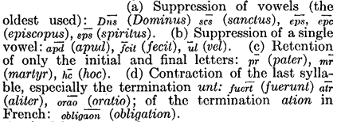
In Latin and French the final letters are always retained in substantives, adjectives, and adverbs.
(3) A small letter placed above a word indicates the suppression of one or several letters. A vowel written over another vowel indicates the initial letter and the termination. The consonants m, r, t placed above the line are used to indicate the terminations um, ur, it.
(4) Abbreviation by suspension consists in leaving the word unfinished; the omission being indicated by a stroke, which cuts through any ascender that may be in its way:
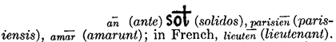
The syllable ram and the genitive plural terminations, orum, arum, are abbreviated by the suppression of the last two letters; in this case the foot of the r is given a transverse bar: (coram) 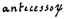 (antecessorum).
(5) Abbreviations by special signs. — The sign most widely used is a small horizontal bar, sometimes waved, placed above the word, which indicates an abbreviation by contraction or suspension: nra (nostra). In the thirteenth century the bar has the forms: . The signs, 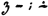, represent sometimes the termination us, especially in ablative plurals in bus; sometimes the terminations que, et, and the final m of the accusative. Other signs have a more determined value: 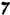 for r; 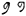 for ur, os, us, and in the North of France all terminations in s and, exceptionally, in et. The origin of this sign is a